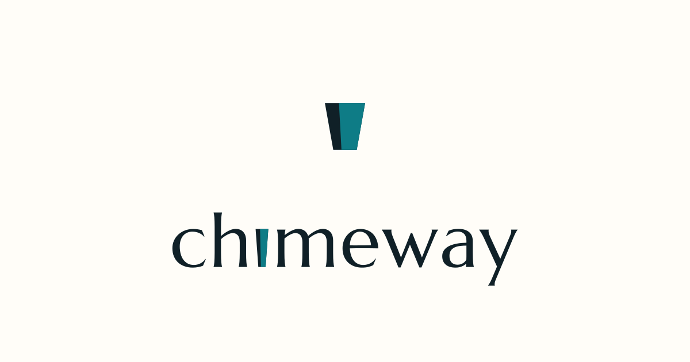

Logo family
Six marks, one system. The two monochrome marks below are inlined as
<svg> with fill="currentColor", so they
inherit var(--cw-fg) and recolor as you flip the theme. The
fixed-color and inverse lockups are shipped assets rendered via
<img>.

Clear space & minimum size
- Clear space: keep at least the height of the mark's counter (its inner negative space) clear on every side. Present marks on an open field — never in a rectangular background cage.
- Minimum size: the mark reads down to 24×24px (favicon scale); the horizontal logotype should not render below ~120px wide before switching to the stacked lockup.
Color & tokens
The book reads the Phase-81 --cw-* SSOT by name only. Each
chip below is painted with var(--cw-*), so what you see is
the token's live resolved value under the current theme — flip the
theme and the swatches repaint. No hex is hard-coded on this page.
Primitives
Semantic aliases
These remap across themes (e.g. accent: teal → mint; focus: blue → brass).
Status triads
Status is never color-alone — each pill pairs
its -text/-surface/-border triad with an icon and a word.
Accent is reserved
--cw-accent is a 10% accent, not "all interactive elements". Use it only for:
- The primary button surface (
--cw-button-primary-bg) in the state showcase - The
.is-selectedcomponent-state indicator (inset ring) - The integrated accent stroke of the brand mark when rendered on theme
- Section-anchor / active-nav emphasis in the book chrome
Links use --cw-link-fg; focus rings use --cw-focus;
hover/active surfaces use the --cw-control-* layer — never accent.
Typography
Four sizes, two weights. Sizes and weights come from
var(--cw-font-size-*) and var(--cw-font-weight-*);
never ship ultra-light UI text, never set muted text below the 14px label size.
Display 28 / semibold 600
Display 28 / regular 400
Heading 20 / semibold 600
Heading 20 / regular 400
Body 16 / semibold 600 — developer-to-developer voice
Body 16 / regular 400 — the default reading size for prose
Label 14 / semibold 600
Label 14 / regular 400 — captions and metadata
Font stacks
Sans / UI — --cw-font-family-sans (Inter → system-ui): the quick brown fox jumps over the lazy dog.
Mono / code — --cw-font-family-mono (IBM Plex Mono): mix.deliver(event, recipient) # 0123456789
Spacing
A single 4px base scale. Every bar's width is the token itself
(var(--cw-space-*)); every step is a multiple of 4.
Component states
Nine states, each shown twice: a live interactive
control that exhibits the real pseudo-class as you hover / focus / press
it, and a frozen copy carrying the matching .is-* forcing
class (or .cwb-skeleton) so the state renders statically —
no interaction required. Every surface is token-driven; the primary
control label is the developer-to-developer CTA install chimeway.
Hover
token: --cw-control-hover
.is-hover
Focus
token: --cw-focus ring (SC 2.4.7)
.is-focus
Active
token: --cw-control-active / --cw-motion-pressed
.is-active
Disabled
token: --cw-control-disabled-bg / -fg
:disabled
frozen .is-disabled
Loading
token: --cw-fg-muted + --cw-motion-fast pulse
.is-loading
Error
token: --cw-status-danger-* triad + label + icon
.is-error — color + icon + word
Empty
token: --cw-fg-muted on --cw-surface-panel
Trigger an event to see it traced here.
.is-empty — calm copy that explains the next step
Skeleton
token: --cw-control-disabled-bg ↔ --cw-surface-hover shimmer
.cwb-skeleton — animation off under prefers-reduced-motion
Selected
token: --cw-surface-active + inset --cw-accent ring
.is-selected
Do & Don't
Three side-by-side pairs. Each Don't is the same
correct, shipped asset or token wrapped in a CSS-only misuse treatment
(.cwb-dont) — nothing broken is ever committed. Read
the rail color: green marks the Do, red the
Don't.
Mark + wordmark as one unit on an open field; the inverse mark reads with no backdrop. Generous, consistent clear-space.
No rectangular background cage behind the mark, and no icon-left / text-right split. The cage here is pure CSS around the correct asset — the SVG itself is untouched.
Status is conveyed by color plus a label and an icon.
Body copy is --cw-ink on --cw-paper —
maximum legibility.
Never lean on color alone (both pills read identically to a color-blind reader), and never set body copy in brass on paper — it fails contrast. This whole block is tinted by CSS, not a hard-coded hex.
Consistent --cw-space-* rhythm; documented
clear-space around the mark and between elements.
Cramped, ad-hoc gaps and sub-minimum logo clear-space.
The zeroed spacing is applied purely via .cwb-dont--cramped.
Live contrast matrix
Every badge below is computed live from the token's
resolved value using the exact WCAG relative-luminance formula (no color
library). Flip the theme or your OS light/dark preference and the ratios
recompute. AA thresholds: ≥4.5:1 for normal text,
≥3:1 for large text and non-text UI. Sanity check:
--cw-ink on --cw-paper reads very high, while
--cw-brass on --cw-paper fails body text.
The quick brown fox delivers the event.
…The quick brown fox delivers the event.
…Body text on the page field.
…Body text on a panel.
…Muted caption on a panel.
…A link on the page field.
…Accent text / large UI on the field.
…Primary button label on its surface.
…